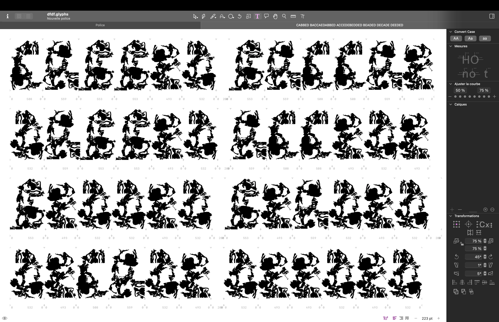
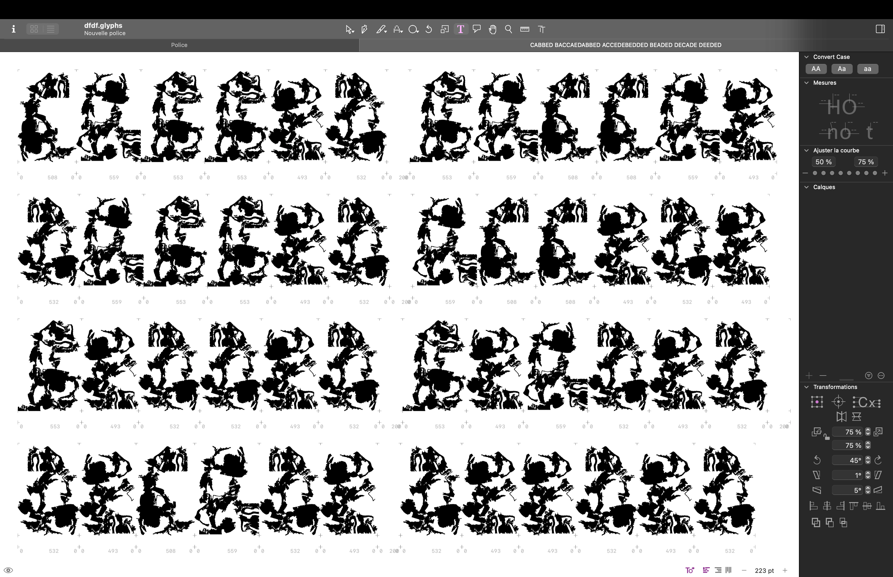

About
In the land of Gods and Monsters, type is a fantasy. Type is an artistic endeavour. Type is a world.
Fantasy is my escapism. I find immense comfort in the imaginary worlds I create, in my mind and in type. It is not that reality is not fulfilling; type enhances it. Type is a conduit for enchantment. For enchanting myself. A portal to realms yet unseen.
Type design is creating letters. Letters make words, make sentences, make texts, make books, make worlds, and universes. Shapes of letters matter as much as the meaning of the words they compose. They are as much of a vessel for storytelling than the images the words invoke.
One might see type as purely utilitarian; I see it as a powerful source of magic. Building a character set leaves me in awe. Every time. I am expressing imaginary worlds without words. And yet with so many letters. Transcending confines of conventions, evoking profound emotions and narratives, is the true power of type design.
I approach type like a fighter and a scholar. I conceive typefaces whose intent is to embody the feeling of utter joy that letters give me. In this world, though reality and fantasy blur, digital realms intermingling with tangible experiences, type remains. Quoting the powerful character Yennefer in the Witcher book series, my favourite invented universe of all time: "Magic is Chaos, Art and Science; it is a Blessing, a Curse, and Progress". And Magic is Type Design.
 My name is Anne-Dauphine Borione, also known professionally as Daytona Mess (a nickname inspired by Lana Del Rey's song Daytona Meth), but everyone calls me Ando. I am a French, display and experimental type obsessed type and graphic designer. I am known to explore the fine border between legibility and illegibility, readability and unreadability, a practice infused by my years of studying fine arts at the Central Saint Martins where I graduated from in 2016. After a master degree in Typography and Graphic Design from the ECV Paris, and completing TypeMedia, I taught at the ECV for a year in Paris and am now working on building my fantasy themed future foundry, TypeLair. When I am not type designing, which frankly almost never happens, I can be found wielding my sword and casting spells, clearing Faerûn of goblins, playing loud pop music, but mostly riding or slaying dragons, depending on my mood.
My name is Anne-Dauphine Borione, also known professionally as Daytona Mess (a nickname inspired by Lana Del Rey's song Daytona Meth), but everyone calls me Ando. I am a French, display and experimental type obsessed type and graphic designer. I am known to explore the fine border between legibility and illegibility, readability and unreadability, a practice infused by my years of studying fine arts at the Central Saint Martins where I graduated from in 2016. After a master degree in Typography and Graphic Design from the ECV Paris, and completing TypeMedia, I taught at the ECV for a year in Paris and am now working on building my fantasy themed future foundry, TypeLair. When I am not type designing, which frankly almost never happens, I can be found wielding my sword and casting spells, clearing Faerûn of goblins, playing loud pop music, but mostly riding or slaying dragons, depending on my mood.
Dargon is my first ever text typeface. Let me tell the tale of how it spawned into existence!
 
